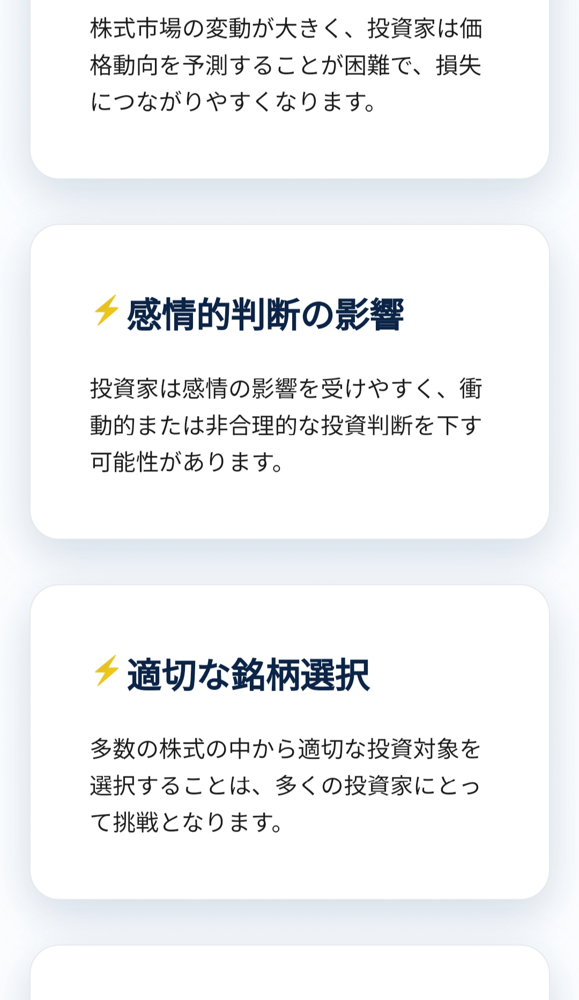
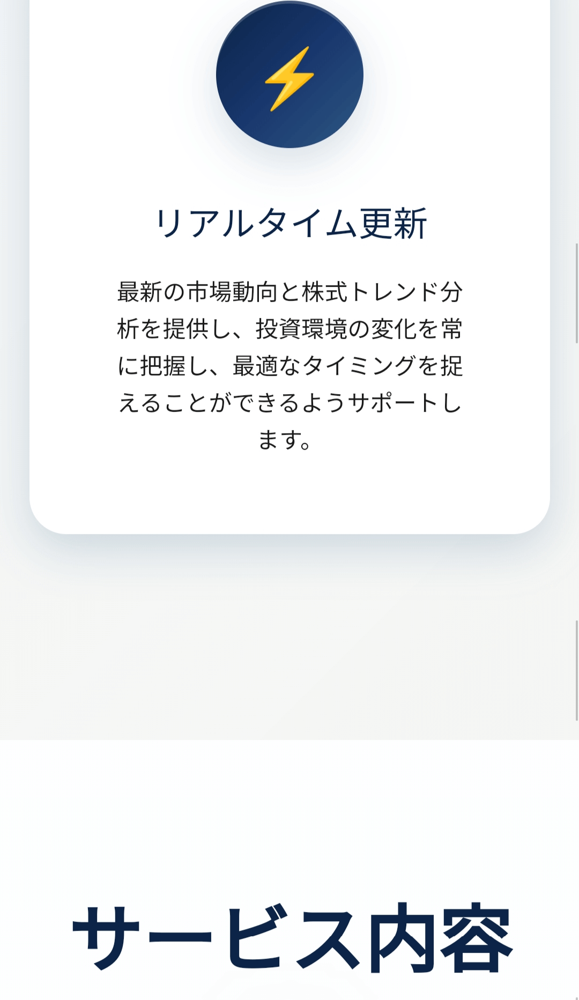
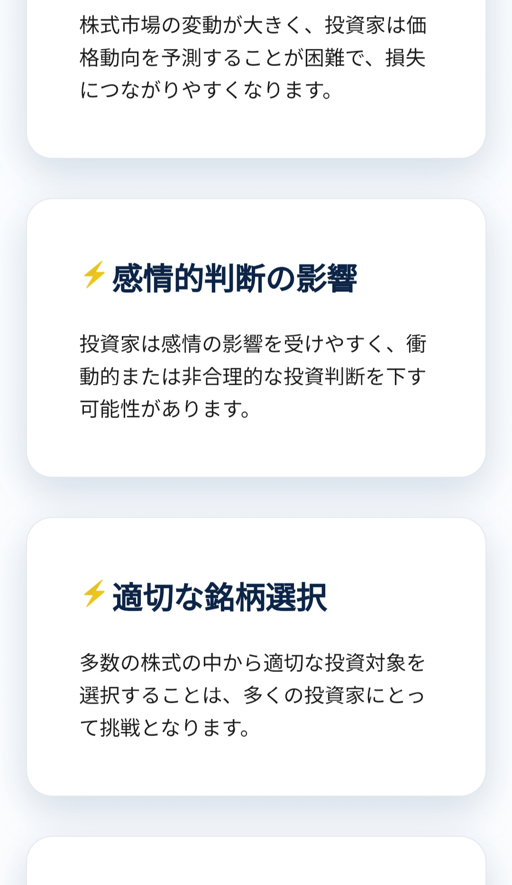
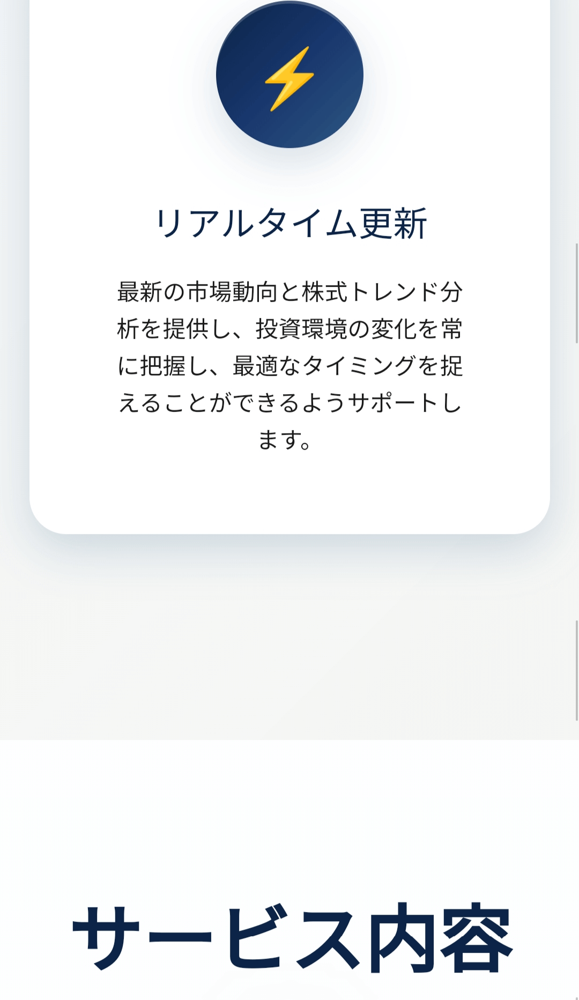

イノベーションエコシステムとスタートアップ企業
経済面では、日本は経済の回復と成長を促進するために懸命に取り組んでいます。人口の高齢化や市場の縮小といった課題にもかかわらず、日本のハイテク産業とイノベーション力は依然として強力です。特に自動車、ロボット、バイオテクノロジーなどの分野では、企業は研究開発と技術革新を通じて産業の高度化を推進してきました。政府はまた、経済の回復力と適応力を高めるために、政策支援と金融投資を通じて新興産業の発展を促進しています。
2025年を見据えると、日本市場では持続可能な開発とグリーン経済がより重視されるようになるでしょう。政府は2050年までにカーボンニュートラルを達成するという目標を掲げ、企業に低炭素で環境に優しい生産モデルへの転換を促している。この目標は気候変動への取り組みに役立つだけでなく、経済の新たな成長ポイントを生み出すことにもなります。同時に、持続可能な製品やサービスに対する消費者の需要が高まるにつれて、企業はイノベーションや市場戦略において環境保護と社会的責任にさらに注意を払うようになるでしょう。
さらに、国際貿易と投資は、今後も日本の経済成長を牽引する重要な要素であり続けるでしょう。日本政府は、輸出市場を拡大し、経済の国際競争力を高めるために、他国との自由貿易協定を積極的に模索している。 2025年までに、世界市場の変化に伴い、日本は貿易相手国をさらに多様化し、単一市場への依存を減らすことが予想されます。
まとめると、2025年の日本は挑戦とチャンスに満ちた時代となるでしょう。教育改革、経済革新、持続可能な開発、国際協力は、国家の進歩にとって重要な原動力となるでしょう。日本は、変化に適応し続けることで、世界経済における重要な地位を維持し、将来の成長に向けた強固な基盤を築くことができると期待されます。